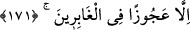
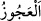
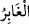
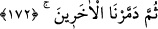
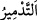
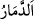
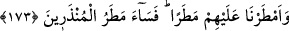

onlara tâbi olanları ilâhî azab o kavim üzerine indiği vakitte evlerinden çıkararak
kurtardık
171. Ancak bir kocakarı müstesna. O, geride kalanlardan (oldu).
“Ancak bir kocakarı müstesnâ.” O Lût (a.s.)’ın Vâlihe isimli karısı idi. Lût (a.s.)’ın
âilesinden o istisnâ edilmiştir. Karısının kâfir olmasının Lût (a.s.)’a bir zararı
olmamıştır. Çünkü eş olma hakkından dolayı o da âilesindendi.
Râğıb der ki: “Çoğu işleri yapmaktan âciz olduğu için ihtiyar kadına “
”
denilmiştir.
“O, geride kalanlardan (oldu).” Yâni azabda kalanlar arasında oluşu mukadder
olanlardan oldu. Çünkü o, o kavme meyilli ve onların işlediği kötülüklere râzı idi.
Yolda ona bir taş isâbet etti ve onu helâk etti.
Zikredilir ki o gürültülü sarsıntıyı duyunca tek başına geriye baktı. Bunun üzerine taşa
çevrildi. İmam Süheylî’nin Kitâbü’t-Ta’rîf’inde böyle geçer.
el-Müfredât’ta der ki: “
” beraberinde olanlar geçip gittikten sonra geride kalan
demektir. Allah Teâlâ “Ancak bir kocakarı müstesnâ. O, geride kalanlardan (oldu).”
Yâni, ömürleri uzun olanlardan oldu, demektir. Bu ifâdenin ‘Lût (a.s.)’la gitmeyip
geriye kalanlar arasında kalanlardan oldu.’ anlamında olduğu da ‘azâbda kalanlardan
oldu’ anlamında olduğu da söylenmiştir.
172. Sonra diğerlerini helâk ettik.
Onları en şiddetli ve en korkunç bir şekilde; memleketlerinin altını üstüne getirerek
helak ettik.
“
” bir şeyin üzerine helâki göndermektir. “
” ise acâib ve korkunç bir şekilde
helâk olmaktır.
173. Üzerlerine öyle bir yağmur yağdırdık ki... Uyarılan-ların (fakat yola
gelmeyenlerin) yağmuru ne de kötü!